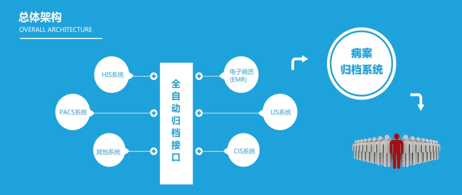

产品定位
病案无纸化归档系统用于打通医院临床系统到病案管理的归档链路，通过“全自动归档接口”实现病案电子化归集、打印与管理，推进病案管理无纸化、规范化。
系统概述
- 从医院已有 HIS/RIS/PACS 等系统抓取病历数据与文件流
- 支持电子病历、历史病案等多来源归档
- 通过自动完整性校验实现终末质控
- 支持文件加密、水印、权限控制与在线借阅审批
- 全流程留痕，满足可追溯管理要求
总体架构
系统以“全自动归档接口”为核心，可对接 HIS、PACS、电子病历（EMR）、LIS、CIS 及其他系统，统一进入病案归档系统进行标准化管理与使用。
系统亮点
- 行业首创：后台自动归档，无人值守
- 数据准确：归档文件与原系统 100% 一致
- 贴合政策：符合电子病历应用管理规范，实现跨系统通用格式可存档
- 技术先进：基于虚拟打印 + XML 技术，支持大批量 PDF/XML 归档
- 速度优势：归档速度快、准确率高
- 兼容性好：兼容主流厂商电子病历、LIS/RIS/PACS 等系统
主要功能
- 病案归档：自动抓取并归档病历数据
- 归档病案打印：支持批量及按条件打印
- 病案复印窗口：身份识别、申请登记、复印记录
- 统计报表：工作量与病案质量统计
- 借阅管理：在线申请与审批
- 终末质控：完整性与结构化质控
- 权限控制：页面级与内容级权限控制
- 日志记录：可追溯操作日志
| 适用对象 | 医院病案室、医务科、信息科与质控部门 |
|---|
| 部署方式 | 院内部署 / 私有化部署 |
|---|